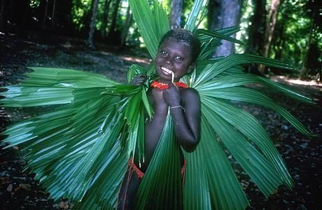
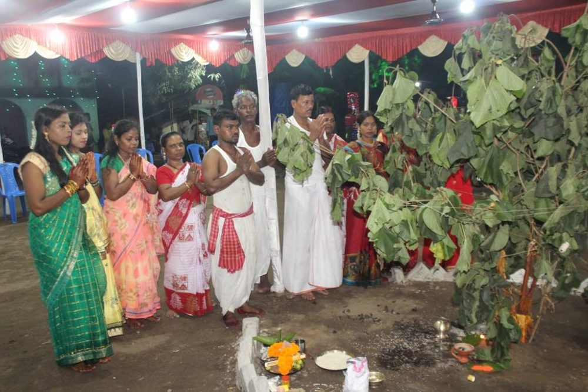
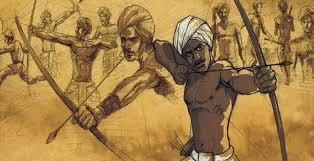
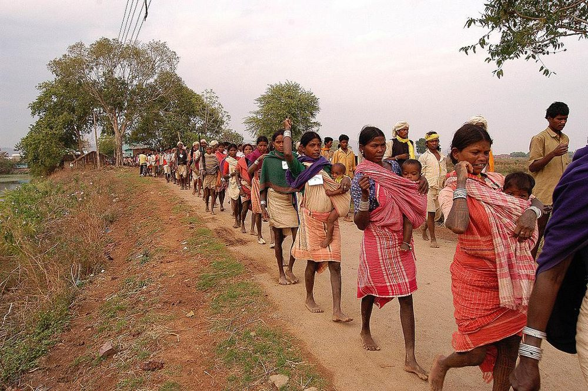
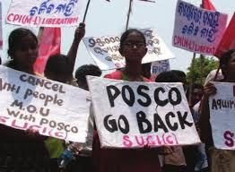

Tribal Communities in IndiaHigh priority
Answer with the definition problem first, then colonial policy, then the three approaches, ending on displacement and the Xaxa report.
Chapter map#
- Tribal communities
Definition
- Original inhabitants
- 8.6% (2011)
- Varna position
- PVTGs
Regions
- Himalayan
- Middle
- Western
- Southern
- Island
Colonial policy
- Isolationism
- 1935 Act
- Criminal Tribes Act
Development
- Isolation
- Assimilation
- Integration
- Constitution
Change
- Religious
- Hinduisation
- Syncretism
Discontent
- Statehood
- Displacement
- Globalisation
Exam lens#
The story first#
In simple words#
- Tribes = original inhabitants with own culture; in India they are diverse and overlap with caste society, so definitions are problematic.
- Colonial rule: isolation, Excluded Areas (1935), Criminal Tribes Act (1871); independent India: isolation, assimilation or Nehru's integration (Tribal Panchsheel).
- Discontent comes from displacement, extractive development, weak implementation and demands for autonomy and identity.
| Term | In plain words |
|---|---|
| Scheduled Tribe | Constitutionally listed tribal community; 705 in number, 8.6% of the population (2011). |
| PVTG | Particularly Vulnerable Tribal Group; 75 identified, earlier called Primitive Tribal Groups. |
| Excluded Areas | 1935 Act areas outside provincial legislatures, administered by the Governor. |
| Criminal Tribes Act 1871 | Colonial law notifying entire communities as criminal. |
| Isolationism | Keep tribes apart from outsiders to preserve culture. |
| Assimilation | Absorb tribes into the Hindu and mainstream fold. |
| Integration | Nehru's middle path: respect tribal culture while enabling development. |
| Ethnonationalism | Claim to autonomy based on shared ethnic identity, culture and territory. |
| Hinduisation | Adoption of Hindu gods and rituals by tribal communities. |
1 · What are Tribes?#


- Tribals orAdivasisare considered as the original inhabitants of a land.
- Conventionally, a tribe is described as a small sized society characterised by rudimentary technology and economic backwardness.
- Tribals use primitive tools and implements and are engaged in pre-agricultural economic activities like hunting, gathering, pastoralism, and trapping of bees and animals.
- Thus, the tribal economy is a subsistence economy in which little or no surplus is generated.
- The tribal society is, therefore,egalitarian.
- Tribals typically live in geographically secluded areas such as in the mountains, on hill tops, in caves, islands and deserts.
- A tribe is a close-knit community based on strong bonds of kinship.
- They prefer to maintain political autonomy and avoid contact with the non-tribals or outsiders.
- Geographically and socially, tribes are separate from the mainstream society.
- A child belonging to the Jarwa tribe in the Andaman Islands A tribe has its own distinctive culture – its own language, clothing, cuisine, and customs.
- Tribal religious beliefs and practices include spirit worship, animal worship, and nature-worship. A tribe has its own distinctive religious mythology, deities, and rituals.
- Frequently, tribes have distinct racial features which mark them apart from the non-tribals.
- Tribes live in close proximity to nature.
- Their daily lives, economy, and culture are intimately connected to their ecological surroundings.
- Tribals are considered as separate from and distinctive from the mainstream.
- In the Indian context, tribal society (Jana) is frequently defined in contrast to caste Hindu society (Jati).
- While the former is egalitarian, the latter is stratified.
- Tribes live in mountains and hills; caste Hindus live in the villages and cities in the plains.
- Tribes are small sized, while caste society is much larger.
- The caste-based social order, unlike tribal social organization, is based on ritual purity and pollution.
- The caste system stems from the religion of Hinduism, while the tribal religion is separate- involving worship of nature, spirits, and totems.
- The caste society is characterized by comparatively more advanced technology and has a feudal-agrarian economy.
- In contrast, tribes are technologically backward and have a pre-agricultural subsistence economy.
- The position of women, in general, is better in tribal communities than in the patriarchal caste Hindu society.
- The Lokur Committee (1965) suggested certain criteria that can be used to identify tribes in India.
- These include the presence of primitive traits, a distinctive culture, geographical isolation, shyness of contact with others, and backwardness.
- In academic definitions, Lucy Mair described a tribe as an independent political division of a population united by a common culture.
- Similarly, the Imperial Gazetteer of India (1911) defined a tribe as a collection of families bearing a common name, speaking a common dialect, and occupying a common territory.
- Such groups were not necessarily endogamous in practice, though they may have originally been so.
2 · Definitional Problems Related to Tribes in India#
- However, the Indian tribal population is large, complex and diverse.
- The aforementioned Euro-centric understanding of tribes does not truly capture the complexity and dynamism of India’s tribal groups.
- As per the Census of India 2011, tribals constitute 8.6 % of the population of the country, and the number of Scheduled Tribes is 705.
- Tribes in India belong to different racial groups, and vary in size, occupations, and levels of development.
- They also are in contact with the non-tribals and have integrated into the mainstream society in varying degrees.
- Some tribes are small sized and isolated (like the Jarawa, Onge and Sentinelese who number in a few hundred at most); while others are among the largest communities in the country (like the 1.7 crore Bhils and the 1.3 crore Gonds).
- Many large tribes have developed elaborate stratification systems.
- Different tribes in India are at varying levels of socio-economic development, reflecting the enormous diversity within the tribal population.
- While some tribes remain economically and educationally disadvantaged, others have made significant progress and attained a fair degree of advancement.
- For instance, the Meenas of Rajasthan have emerged as a politically and administratively influential community, with high representation in government services and public administration.
- While some PVTGs are isolated, many tribal groups today are integrated into the mainstream economy and workforce.
- They are not only engaged in traditional livelihoods of shifting cultivation, basket making, and pastoralism but also work in the fields as farm hands, in mines and factories, and in the big metros as domestic helps, street vendors, bureaucrats, and professionals.
- This wide spectrum of socio-economic participation illustrates that tribal society is not a homogenous, static, or isolated entity, but rather a dynamic and evolving segment of Indian society, with different groups experiencing modernization and integration at different paces.
- The interaction between tribes and caste society has been an enduring feature of Indian civilization.
- As Nihar Ranjan Ray argues, Jana-Jati interaction has been a recurrent feature of social life in India throughout its civilizational journey.
- Indian history and mythology are replete with stories of the intimate social relations and regular contact between tribes and non-tribes.
- For instance, in the Ramayana, Lord Rama is aided by the Vanar Sena.
- In Mahabharata, Arjuna and Bhima have marital relations with tribal kingdoms.
- N.K. Bose spoke of the Hindu method of tribal absorption, whereby tribes over time became incorporated into the caste system.
- This occurred partly because the caste system, with its economic framework of the Jajmani exchange, offered greater economic stability than the relatively precarious tribal economy.
- Many tribes thus sought integration into the caste fold and were incorporated as artisan or service castes within the Jajmani network.
- Scholars like Surajit Sinha and F.G. Bailey have challenged the clear distinction between tribes and castes, instead suggesting that a tribe–caste continuum exists.
- According to them, different communities in India could be located on a spectrum, with pure “tribal types” at one end and pure “caste types” at the other.
- Most groups, however, exhibited a mix of both features in varying degrees.
3 · Tribes and Hindu practice#


- For instance, the Santhals perform Hindu rituals and employ Brahmin priests, while still retaining their own clan system and festivals.
- Similarly, many other tribes in central India such a Gonds and Bhils simultaneously participate in Hindu pilgrimages, rituals and Jajmani exchange; but also preserve their indigenous rituals and way of life.
- Sinha also specifically developed the idea of a tribe–Rajput continuum.
- He observed that many tribal chiefs imitated Rajput practices and claimed Kshatriya status.
- The Bhumij rulers of Birbhum (West Bengal), for example, styled themselves as Rajputs in order to enhance their prestige.
- Tribal religion is not neatly separable from Hinduism.
- G.S. Ghurye famously described tribes as “backward Hindus.” Andre Beteille also argued that forests, seen as central to tribal culture, have historically been integral to Hinduism itself.
- Ashrams of Hindu rishis were located in forests, the Aranyakas (Vedic texts) were composed in forest settings, and both the great Hindu epics also revolve around forest life.
- Many tribal deities have been absorbed into the Hindu pantheon-Lord Jagannath of Puri is considered to have tribal origins, while several other deities like Vithoba, Khandoba, and Ayyappan also show tribal influences. M.N. Srinivas noted that many tribes also undergo the process of Sanskritization, whereby they adopt Hindu practices and claim higher social status.
- For instance, the Bauri tribe has taken to wearing the sacred thread and participating in Hindu pilgrimages.
- Nadeem Hasnain estimates that up to 95% of India’s tribes have undergone some degree of Hinduisation.
4 · Tribes and Varna#
- The classical Hindu Varna system comprises four categories - Brahmins, Kshatriyas, Vaishyas and Shudras.
- Certain communities have historically remained outside this fourfold hierarchy.
- Tribal communities do not occupy a single, fixed position within the Varna system, as many evolved with distinctive social organisations, religious practices and systems of authority outside the Brahmanical caste order.
- However, the relationship between tribes and caste society has historically been fluid:
- 1. Outside the Varna hierarchy: Many tribes traditionally maintained relatively autonomous social systems based on kinship, clans, customary laws and indigenous religious practices, without accepting the ritual hierarchy of the four Varnas.
- 2. Absorption into caste society: N.K. Bose described the Hindu method of tribal absorption, whereby some tribes gradually entered the caste order, often as service or Shudra castes.
- 3. Tribe–caste continuum: F.G. Bailey and Surajit Sinha challenged the rigid distinction between tribes and castes, showing that communities may combine tribal and caste characteristics in varying degrees.
- 4. Claims to higher Varna status: Through Sanskritisation and political mobility, certain tribal groups and chiefs adopted Brahmanical practices and claimed higher Varna (often Kshatriya) status.
- Surajit Sinha's tribe–Rajput continuum illustrates this process.
- Thus, tribes cannot be uniformly classified as Kshatriyas, Shudras, or any other specific Varna.
- Their relationship with the caste system ranges from relative autonomy to partial or extensive incorporation, reflecting the historically dynamic boundaries between tribe and caste in India.
- Thus,the tribes are at different levels of social integration with the mainstream.
- While many have become Hinduized, others have embraced Islam (e.g., Koya in Lakshadweep), Buddhism (e.g. Changpa and Brokpa in Ladakh), or Christianity (e.g., Naga, Mizos, and Kukis in north east and Oraon and Ho in central India).
- Thus, in the Indian context, tribals and non-tribals cannot be seen as mutually exclusive or neatly separate categories.
- The Euro-centric image of “pure” tribes, untouched by civilization, is narrow and misleading.
- Historically, several tribes have been part of the jajmani system and have maintained matrimonial and kinship relations with caste society.
- Modernization has further blurred these distinctions.
- Article 366(25) of the Constitution provides that “Scheduled Tribes means such tribes or tribal communities… as are deemed under article 342 to be Scheduled Tribes for the purposes of this Constitution.” As Andre Beteille argues,the distinction between tribals and non-tribals in India is more administrative than socio-cultural.
- The classification of certain groups as Scheduled Tribes serves primarily as a legal-administrative category for the purpose of affirmative action and policy targeting.
- In reality, the lived experiences of tribal communities show overlapping identities, porous boundaries, and dynamic processes of interaction with mainstream society.
- In conclusion, the concept of tribe in India cannot be understood through Eurocentric notions of primitiveness and isolation.
- Indian tribes are diverse, adaptive, and deeply interconnected with caste society and broader civilizational currents.
- They represent not “remnants of a bygone era” but evolving communities negotiating modernity while retaining distinct elements of culture and identity.
5 · PVTGs#
- Certain tribes have been characterised as Particularly Vulnerable Tribal Groups (earlier known as Primitive Tribal Groups) on the basis of their greater ’vulnerability’ even among the tribal groups.75 tribes have been identified as PVTGs .
- The PVTGs have been identified on the basis of the following criteria:
- 1. a stagnant or declining population, 2. pre-agricultural level of technology, 3. economic backwardness 4. low level of literacy Some examples of PVTGs are the Sentinelese, Kadar, Birjia, Asur, and Chenchu.
- The majority of the PVTG population lives in the six States of Maharashtra, Madhya Pradesh, Chhattisgarh, Jharkhand, Odisha, Andhra Pradesh and Tamil Nadu.
- Odisha has 13 PVTGs, the largest number for any State.
- The vulnerability of the PVTGs primarily stems from the loss of their traditional livelihoods, habitats and customary resource rights through the gradual exploitative intrusion of the market and State into their areas in the form of industrial projects, conservation efforts, tourism, and the forest bureaucracy and so on.
- These conditions have led to the loss of their land and resources resulting in chronic malnutrition, starvation and ill health among these groups.
- PVTG are considered as particularly vulnerable also because of their small numbers, lack of access to resources, and threat of encroachment from the market and the state.
- The groups most under threat have been identified as the Shompens, Sentinelese and Jarawas of the Andaman Islands; the Bondos of Odisha; Cholanaickans of Kerala; Abujh Marias of Chhattisgarh and Birhors of Jharkhand.
- Xaxa Committee notes that one of the most critical issues to be addressed with regard to PVTGs is their perceived ‘primitivism’ and ‘backwardness’ evident in official discourse.
- Although, the term ‘Primitive Tribal Groups’ was replaced by ‘Particularly Vulnerable Tribal Groups’ in 2006, the highly derogatory term ‘primitive’ continues to be used by the government, media and NGOs.
- Stereotyping of PVTGs as ‘backward’ presumes a linear trajectory of development and progress and devalues the culture and traditions of these communities with devastating effects.
- Any efforts to impose development programmes on PVTGs without considering their own priorities and development needs may backfire.
- There is also a significant risk that vulnerabilities may be exacerbated rather than reduced through government intervention and therefore due caution must be exercised in all cases.
6 · Geographical Spread of Tribes#
- The tribes can be distinguished into five broad regional groupings based on ecological, social, economic, administrative, and ethnic factors (although there are overlaps):
- 1. Himalayan Region: It has three sub-regions: (a) Northeastern Himalayan region, (b) Central Himalayan region, and (c) North-Western Himalayan region.
- The Himalayan Region comprises 2.03 % of STs in the States of Jammu and Kashmir, Himachal Pradesh, Uttarakhand and UP; the Northeastern region has 12.41 % of STs in Sikkim, Arunachal Pradesh, Nagaland, Manipur, Mizoram, Tripura, Meghalaya and Assam
- Map of India showing areas of high tribal concentration 2.
- Middle Region: It is constituted by the States of Bihar, Jharkhand, West Bengal, Andhra Pradesh, Odisha and Madhya Pradesh (including Chhattisgarh), where over 52%-55% tribal people of India live.
- 3. Western Region: It includes the States of Rajasthan, Gujarat, Maharashtra, Goa, Dadra and Nagar Haveli.
- The Western region has 27.64 % of India's ST population.
- 4. Southern region: It is comprised of the states of Tamil Nadu, Karnataka and Kerala.
- The Southern region has 5.31 % of STs.
- 5. Island Region: The Islands of Andaman and Nicobar in the Bay of Bengal and Lakshadweep in the Arabian Sea; where 0.11 % of STs live.
- Regarding the distribution of ST population by states, Madhya Pradesh stands first with 14.7%, followed by Maharashtra (10.1%), Odisha (9.2%), Rajasthan (8.9%), Gujarat (8.6%), Jharkhand (8.3%), Chhattisgarh (7.5%), Andhra Pradesh (5.7%), West Bengal (5.1%), Karnataka (4.1%), Assam (3.7%), Meghalaya (2.5%), and the remaining States represent 11.6% of the tribal population.
- Among the States and Union Territories, Lakshadweep ranks top with the highest proportion of ST population within the state at 94.8%, followed by Mizoram (94.4%), Nagaland (86.5%), Meghalaya (86.1%), and Arunachal Pradesh (68.8%).
7 · Colonial Policies and Tribes#
- Colonial tribal policy in India was shaped primarily by the economic and administrative interests of the British state rather than by concern for tribal welfare.
- Tribal communities, which had historically enjoyed relative autonomy in forested and hilly regions, experienced profound socio-economic disruptions under colonial rule.
- British policies transformed tribal life through land alienation, forest restrictions, commercialization, missionary intervention, and administrative segregation.
- As a result, tribal societies underwent increasing marginalization, exploitation, and disintegration of traditional institutions.
- Colonial Perception of Tribes The British viewed tribes as “primitive,” “backward,” and distinct from the caste-based Hindu social order.
- Tribal areas were often seen as difficult to administer due to their geographical isolation and resistance to state authority.
- Consequently, colonial administrators developed an isolationist approach, aimed at keeping tribes separate from outside influences.
- Colonial policies led to many tribal uprisings
8 · Colonial Policy of Isolationism#
- British administrators such as Verrier Elwin initially argued that tribes should be protected from excessive outside interference in order to preserve their culture and way of life.
- Isolationism implied:
- Administrative separation of tribal areas
- Restriction on entry of outsiders
- Limited political participation
- Minimal social integration with mainstream society
9 · Government of India Act, 1935#
- The policy of segregation became institutionalized under the Government of India Act, 1935.
- Tribal areas were classified into Excluded Areas and Partially Excluded Areas These areas were kept outside the jurisdiction of provincial legislatures and were administered directly by the Governor.
- The rationale was that tribal communities required special protection due to their distinct socio-cultural conditions.
- However, this arrangement had contradictory consequences.
- It protected tribal areas from immediate political domination by caste-Hindu elites.
- At the same time, it denied tribals democratic participation and political representation.
- The British justified this policy on the grounds that tribes were culturally distinct and vulnerable to exploitation by non-tribals.
- However, critics argue that isolationism also served colonial interests by enabling easier control over strategically important frontier and forest regions.
10 · Impacts of Colonial Policies#


- One of the most significant consequences of colonial rule was the disruption of the tribal economy.
- Traditionally, many tribal communities depended on shifting cultivation, forest produce, hunting, and communal ownership of resources.
- Colonial policies commercialized land and forests, undermining these traditional systems.
- Overall, the colonial policies resulted in land alienation, indebtedness, pauperization, forced migration, and breakdown of self-sufficient tribal economies.
- Colonial rule had several far-reaching consequences for tribal societies, as follows:
- 1. Commercialization of Forests The colonial state asserted control over forests through laws such as the Indian Forest Acts of 1865 and 1878.
- Forests were commercialized for timber extraction and railway expansion.
- Traditional tribal rights over forests were severely curtailed:
- Shifting cultivation was restricted
- Hunting and grazing rights were limited
- Access to forest produce became regulated As forests formed the economic and cultural basis of tribal life, these measures disrupted tribal subsistence patterns and increased dependency on wage labour.
- 2. Land Alienation The introduction of zamindari and private property enabled non-tribal landlords, moneylenders, and traders to acquire tribal lands.
- Tribals, unfamiliar with formal legal systems, often lost land through debt and coercion.
- This led to widespread landlessness and indebtedness.
- 3. Labour Exploitation Many tribals were drawn into plantation work, mining, and construction as cheap labour.
- Scholars have noted that colonial capitalism transformed many tribal communities from relatively autonomous producers into exploited labourers at the margins of the economy.
- 4. Socio-Cultural Impacts Colonial intervention also affected tribal social and cultural life.
- Missionary activities introduced education and Christianity in several tribal regions, producing both social mobility and cultural change.
- Traditional authority structures weakened under the impact of state administration and market forces.
- The entry of moneylenders, traders, and contractors increased interaction with non-tribal populations, often resulting in exploitation and cultural disintegration.
11 · Criminal Tribes Act#
- The Criminal Tribes Act, 1871, enabled the colonial government to notify entire communities as criminals.
- British administrators associated certain communities with hereditary or habitual criminality, reflecting colonial racial stereotypes.
- It also reflected the colonial tendency to classify and control populations considered difficult to govern.
- Mobile communities were difficult to monitor through the colonial systems of policing, taxation and territorial administration, that assumed a sedentary population.
- The colonial state sought to regulate livelihoods, movement and settlement, especially among communities whose traditional occupations did not fit its administrative framework.
- Consequently, tribal communities associated with itinerancy, resistance, or activities viewed as threatening colonial order, were subjected to heightened surveillance.
- Major implications: 1. Collective stigmatisation: Entire communities, including children, acquired the stigma of criminality irrespective of individual conduct.
- 2. Restricted freedoms: Registration, surveillance, movement restrictions and compulsory settlements curtailed personal liberty and traditional livelihoods.
- 3. Economic marginalisation: Restrictions on mobility disrupted pastoralism, itinerant trade and other occupations, increasing poverty and dependence.
- 4. Social exclusion: The criminal label reinforced discrimination, police harassment and exclusion from mainstream society.
- The Act was repealed in 1952, and affected communities became known as Denotified Tribes.
- Nevertheless, as the Renke Commission has pointed out, social stigma and discriminatory attitudes have persisted.
- Some denotified communities have also faced restrictions under postcolonial habitual-offender legislation.
- Thus, the Criminal Tribes Act represented a form of colonial social control through collective criminalisation, whose consequences continued beyond Independence.
- 5. Resistance movements The exploitative nature of colonial policies triggered several tribal uprisings across India.
- These movements were directed not only against the British state but also against landlords, moneylenders, contractors, and forest officials.
- Important tribal rebellions against colonial exploitation included the Kol Rebellion (1831–32) in Chhotanagpur, the Santhal Rebellion (1855–56), the Bhil uprisings in the early 19th century, the Munda Ulgulan (1899–1900) led by Birsa Munda, and the Rampa Rebellion (1922–24) in the Andhra region against oppressive forest policies.
- These movements reflected tribal resistance against land alienation, forest restrictions, and external exploitation.
- Many scholars interpret them as struggles to protect tribal autonomy and traditional rights over resources.
- While the isolationist colonial policy appeared protective, it resulted in:
- Continued backwardness due to lack of education and infrastructure
- Political exclusion
- Limited economic opportunities
- Reinforcement of tribal marginalization In conclusion , colonial policies towards tribes were marked by a contradiction between exploitation and protection.
- While the British claimed to preserve tribal distinctiveness through isolation and segregation, their economic policies disrupted tribal livelihoods through land alienation, forest restrictions, and commercialization.
- Consequently, colonial rule profoundly altered the socio-economic conditions of tribes, producing marginalization, resistance, and long-term structural inequalities that continue to influence tribal issues in contemporary India.
12 · Tribal Development and Issues of Integration and Autonomy#
- The issue of tribal development in India revolves around balancing integration with autonomy.
- Tribals, among the most marginalized communities, need access to education, health, and livelihoods, yet they also seek to preserve their unique cultures and institutions.
- This tension between inclusion in modern development and protection of identity has shaped India’s tribal policy since independence.
- The development of tribes in India has been approached through three broad frameworks: Isolation, Assimilation, and Integration.
- Each reflects different understandings of tribal life, culture, and their place within the Indian nation-state.
- Isolation Approach The isolation approach to tribal development was one of the earliest policy perspectives adopted in colonial and immediate post-independence India.
- Rooted in the paternalistic idea that tribals represented “primitive” communities needing protection from the corrosive effects of the outside world, this approach sought to keep them separate from the mainstream population in order to preserve their distinct culture and social institutions.
- Administrators like Verrier Elwin, who served as an anthropological adviser to the Government of India, strongly advocated what he called the “leave them alone” policy, arguing that forced integration or exposure to market forces would destroy tribal identity and create exploitation.
- According to this view, any external intervention-whether by Christian missionaries, modern agencies, or the state-would impose alien values and ultimately destroy tribal society.
- Elwin (left) was close to PM Nehru (right) This approach was visible in the establishment of “excluded” and “partially excluded” areas under the Government of India Act, 1935, where special administrative arrangements were created to limit non-tribal intrusion.
- In practice, the isolationist model meant restricting land transfers to non-tribals, controlling moneylenders and traders, and creating buffer zones to protect tribal habitats.
- It also justified the continuation of special legal and administrative provisions such as the Fifth and Sixth Schedules of the Constitution, which granted autonomous councils, Tribes Advisory Councils, and discretionary powers to Governors in Scheduled Areas.
- However, critics and later development planners argued that excessive isolation risked perpetuating economic backwardness, illiteracy, and poverty, cutting tribals off from the benefits of modern science, technology, and wider social opportunities.
- They warned that romanticizing tribal life as “noble savagery” ignored real issues of exploitation and deprivation within tribal societies themselves.
- Reformers like Thakkar Bapa described it as a ‘National Park approach’ that romanticized tribal life and sought to preserve it in its pristine form, preventing tribals from benefiting from modernization and development.G.S.
- Ghurye, in his book The Aborigines, “So-Called” and Their Future, countered Elwin, arguing that isolation would cut off tribals from the national mainstream.
- He saw isolation of tribals as an extension of the colonial state’s administrative policy of divide and rule.
- In retrospect, the isolation approach is significant for its emphasis on cultural preservation and recognition of tribal distinctiveness, but it also revealed the limitations of policies that rely solely on separation rather than empowerment and participatory development.
13 · Assimilation Approach#
- The assimilation approach to tribal development represents a contrasting perspective to the isolationist view.
- Rooted in the belief that tribals are not fundamentally different from the rest of Indian society, this approach emphasizes their gradual absorption into the socio-cultural, economic, and political mainstream.
- Thinkers such as G.S. Ghurye strongly advocated this model, arguing that tribals are essentially “backward Hindus” who should be brought within the broader Hindu social fold through processes of Sanskritization and integration into caste society.
- The assimilation model aimed at eliminating what it perceived as the tribal–non-tribal divide.
- It stressed uniformity and national integration, linking tribal development to the larger nation-building project.
- Though assimilation has not been pursued as official state policy, several tribes such as the Tharu and Khasas of the central Himalayas have become significantly Hinduised, while many other tribes of central India also worship Hindu gods and perform Hindu rituals alongside their own deities and practices.
- However, critics argue that assimilation often led to the erosion of tribal identity, language, religion, and self-governing institutions.
- Moreover, it resulted in the forced imposition of mainstream values, which often created resentment and led to resistance movements among tribals who sought to safeguard their distinctiveness.
- While assimilation did succeed in bringing sections of tribals into the mainstream economy and polity, it has been criticized for ignoring cultural pluralism.
- This approach is problematic as it is ethnocentric, viewing Brahminical Hindu culture as superior and dismissing the value of tribal cultural diversity.
- Unlike the isolation approach, which emphasized protection, assimilation emphasized absorption, often overlooking the need for empowerment on the community’s own terms.
- The shortcomings of this approach later paved the way for the integration approach, which sought to strike a balance between preserving tribal identity and enabling participation in modern development processes.
14 · Integration Approach#
- The integration approach to tribal development emerged as a middle path between the extremes of isolation and assimilation.
- Advocated by leaders like Jawaharlal Nehru through his ‘Panchsheel for Tribal Development’, this model argued that tribals should neither be kept away from the rest of society in a “museum-like” state of isolation, nor be forcibly absorbed into the mainstream by erasing their distinctiveness.
- Instead, the integration approach sought to respect tribal culture, traditions, and institutions while simultaneously enabling them to benefit from the fruits of modern development.
- PM Nehru laid down the Tribal Panchsheel The Tribal Panchsheel, as laid down by Jawaharlal Nehru, is as follows:
- 1. Non-imposition: People should develop along the lines of their own genius, and the imposition of alien values should be avoided.
- 2. Tribal rights in land and forests should be respected.
- 3. Teams of tribals should be trained in the work of administration and development.
- Introducing too many outsiders into tribal territory should be avoided.
- 4. Tribal areas should not be over administered or overwhelmed with a multiplicity of schemes.
- 5. Results should be judged not by statistics or the amount of money spent, but by the human character that is evolved.
- Tribal Panchsheel principles are significant because they provide a framework for creating policies that respect and promote the well-being of tribal communities.
- These principles advocate for a development model that is inclusive, participatory, and sensitive to the unique needs of tribal populations.
- By adhering to these principles, the government and other stakeholders can help ensure that tribal communities are not marginalized or exploited but are instead empowered and integrated into the broader socio-economic fabric of the nation.
- This approach emphasized participatory development, where tribals themselves would remain central to decision-making processes concerning their welfare.
- It recognized their right to preserve their unique identity while also ensuring access to education, healthcare, political representation, and economic opportunities.
- For example, protective legislations like the PESA Act, 1996, and measures like Tribal Sub-Plan reflect this integrative spirit.
- They provide safeguards for tribal self-governance, land rights, and cultural autonomy while allowing for participation in the broader processes of growth.
- Critics, however, note that despite its balanced vision, the integration approach often faltered in practice due to half-hearted implementation and bureaucratic insensitivity.
- Policies sometimes leaned towards assimilationist tendencies, diluting autonomy of tribal communities.
- Additionally, the pressures of industrialization and large development projects led to displacement and cultural marginalization, which contradict the philosophy of integration.
- Nevertheless, the integration model remains the most widely endorsed in policy circles today, as it aligns with the ideals of inclusive growth, cultural pluralism, and participatory democracy.
- It continues to guide contemporary debates on tribal development by stressing the need for a careful balance between respecting tribal identity and ensuring equitable access to development opportunities.
15 · Measures for Tribal Development#
- The Indian state has taken several measures to safeguard the interests and rights of the tribals and ensure tribal development.
- These include important constitutional provisions, laws passed by central as well as state legislatures, and many administrative mechanisms.
16 · Constitutional Provisions#
- 1. Article 15(4) & 16(4): Enables reservations and special provisions for STs in education and jobs.
- 2. Article 19(5): Permits restrictions on outsiders’ rights in Scheduled Areas to protect tribal interests.
- 3. Article 23 & 24: Prohibits human trafficking, begar (forced labor), and child labor, which tribals are especially vulnerable to.
- 4. Article 29 & 30: Protects cultural and educational rights of minorities, including tribals, allowing them to conserve their language and establish institutions.
- 5. Article 46: Directive Principle asking the State to promote educational and economic interests of STs and protect them from exploitation.
- 6. Article 164(1): provides that in the states of Chhattisgarh, Jharkhand, Madhya Pradesh and Odisha there shall be a Minister in charge of tribal welfare 7.
- Fifth Schedule: Governor has special responsibility for reporting on tribal administration and can make regulations restricting land transfer and money-lending.
- 8. Sixth Schedule: Provides Autonomous District Councils in Assam, Meghalaya, Mizoram, Tripura for self-governance of tribals.
- 9. Article 275(1): Union grants central assistance to states for ST welfare and development of Scheduled Areas.
- 10. Article 330 & 332: Political reservation for STs in Lok Sabha and State Assemblies.
- 11. Article 338A: Provides for the National Commission for Scheduled Tribes (NCST).
- 12. Article 371 & sub-clauses (A–J): The safeguards related to the tribals are ensured by empowering the President to create a committee consisting of members elected from the tribal areas of the State that come under the Sixth Schedule.
- Major Laws for Tribal Protection 1. Scheduled Castes and Scheduled Tribes (Prevention of Atrocities) Act, 1989: Protects STs from atrocities, discrimination, and exploitation, with special courts for speedy justice.
- 2. Panchayats (Extension to Scheduled Areas) Act, 1996 (PESA): Empowers Gram Sabhas to manage natural resources and protect customs in Scheduled Areas.
- 3. Forest Rights Act, 2006: Recognizes forest-dwelling STs’ rights over land, resources, and community forest governance.
- 4. Bonded Labour System (Abolition) Act, 1976: Prevents exploitation of tribals in bonded labor.
- 5. Child Labour (Prohibition and Regulation) Act, 1986: Protects children, including STs, often pushed into hazardous labor.
- 6. Land Acquisition, Rehabilitation and Resettlement Act, 2013: Provides safeguards against displacement of tribals due to projects.
- Tribal Sub-Plan (TSP) Approach was introduced during the Fifth Five Year Plan (1974–79) as a targeted strategy for the socio-economic development of Scheduled Tribes in India.
- Before its introduction, development schemes meant for the general population often failed to reach tribal communities, who remained among the most marginalized and vulnerable sections of society.
- The TSP was designed to correct this imbalance by earmarking a proportion of plan funds specifically for the benefit of tribal people, ensuring that resources would flow to them at least in proportion to their share in the population.
- The central idea of the Tribal Sub-Plan was to promote focused and integrated development of tribals, addressing their multiple deprivations simultaneously.
- Its objectives included bridging gaps in health, education, employment, and income between tribals and the rest of the population, safeguarding their land and cultural rights, and fostering greater self-reliance.
- A key feature of the TSP was that it was not a separate plan but rather a sub-plan integrated into the overall state and central plans.
- Each ministry and department was required to earmark a part of its budget as the “Tribal Sub-Plan component.” This was meant to ensure convergence of sectoral schemes-education, health, agriculture, infrastructure-towards the holistic development of tribal regions.
- Special Central Assistance from the Union government supplemented state-level efforts.
- The nodal responsibility for coordination was given to tribal welfare departments in states, while Tribal Research Institutes were established to provide research and evaluation support.
- Since Independence, a number of administrative steps have also been undertaken by the Indian state to promote tribal development and safeguard their interests.
- The establishment of the Ministry of Tribal Affairs in 1999 marked a significant institutional innovation, providing a nodal ministry dedicated exclusively to the welfare of Scheduled Tribes, their socio-economic advancement, and the implementation of protective legislation.
- To address issues of market exploitation, the government set up the Tribal Cooperative Marketing Development Federation of India (TRIFED), which works to ensure fair pricing for tribal products, promote value addition, and create sustainable marketing channels for minor forest produce and handicrafts.
- The strategy for localized development has included Integrated Tribal Development Projects, which adopt an area-based approach in tribal-dominated districts to deliver targeted schemes in health, livelihoods, and infrastructure.
- Complementing these efforts are Tribal Research Institutes (TRIs), established in various states to conduct ethnographic research, evaluate schemes, and generate policy-relevant knowledge on tribal societies.
- A strong focus has also been placed on education through initiatives like the Eklavya Model Residential Schools, designed to provide quality, English-medium residential schooling with a special emphasis on retaining cultural identity while preparing tribal children for modern opportunities.
- Institutional oversight is strengthened by the National Commission for Scheduled Tribes, a constitutional body that monitors the implementation of safeguards, advises the government on policy, and investigates complaints of rights violations.
- To ensure a holistic framework, the government launched the Vanbandhu Kalyan Yojana in 2014, which seeks to improve quality of life through interventions in education, health, and infrastructure.
- More recently,digital initiatives and the PM Van Dhan Yojana have promoted entrepreneurship, self-help groups, and value-chain development, particularly in forest-based livelihoods.
- Together, these steps reflect an evolving administrative architecture aimed at balancing economic development with the preservation of tribal identity and rights.
17 · Analysis of Tribal Development Efforts#
- Tribal development in post-independence India has brought about significant transformations in the socio-economic and political life of tribal communities.
- One of the most notable changes has been the gradual erosion of their earlier geographical seclusion.
- Improved infrastructure such as roads, railways, and communication networks has connected tribal areas with towns and cities, facilitating mobility, trade, and access to services.
- This has reduced the isolation that once kept tribes cut off from the national mainstream.
- Access to healthcare and educational facilities has also expanded considerably.
- Government initiatives like the establishment of primary health centres, mobile health units, residential schools, and scholarships for Scheduled Tribe students have improved basic welfare indicators.
- Literacy levels among tribals, which were abysmally low at 5.9% in 1951, rose to 59% by the 2011 Census, reflecting the cumulative impact of sustained interventions.
- With rising education, an educated tribal middle class has emerged.
- This new group includes teachers, doctors, engineers, bureaucrats, and other professionals who not only represent tribal aspirations but also serve as role models within their communities.
- Political participation has deepened with the introduction of reservations in legislatures, administration, and educational institutions.
- Tribals now occupy positions in local self-governance structures, state assemblies, and even the Parliament.
- This has given them a direct role in shaping policies that affect their lives.
- At the same time, reservation in government jobs and educational opportunities has enabled greater representation in the bureaucracy and public sector.
- As a result, tribals who were once politically marginalized are today more visible in democratic institutions.
- The spread of education, exposure to modern media, and rising political participation have also increased political awareness among tribal groups.
- They are now more assertive in demanding rights, recognition, and development.
- From mobilizing around land rights and forest resources to pressing for political autonomy and cultural recognition, tribal movements reflect a growing self-confidence.
- The emergence of tribal leaders, intellectuals, and activists has further consolidated this process.
- Tribal development has not only improved the material conditions of life for many communities but has also given rise to new aspirations, greater political voice, and a stronger sense of identity.
- While inequalities remain, the overall trajectory has been towards integration with mainstream development, without completely erasing distinct cultural and social features.
18 · Religious Change among Tribals#
- Traditionally, tribal religions were centred around nature worship, ancestor worship, sacred groves, spirits, and animistic beliefs.
- However, state intervention, modernization, and interaction with mainstream religions brought significant religious transformations among tribal societies.
- The nature of religious change among tribes has generally involved:
- Conversion to organized religions such as Christianity or Hinduism
- Sanskritisation and Hinduisation
- Reform and revivalist movements
- Assertion of distinct tribal religious identities Colonial Period During the colonial period, tribal religious beliefs and practices were affected mainly by two major forces:Christian missionary activity and Hinduisation.
- 1. Christian Missionary Influence Christian missionaries were particularly active among North-Eastern and central Indian tribes.
- Missionaries established churches, schools, and healthcare institutions, leading to large-scale conversions in several tribal areas.
- According to Verrier Elwin, between 50% and 100% of the population of several North-Eastern tribes had embraced Christianity.
- Conversion had both positive and negative consequences.
- On one hand; it improved literacy and health among tribes.
- However, in many cases, traditional tribal beliefs, rituals, and indigenous culture weakened after conversion.
- Among tribes such as the Nagas and Mizos, Christianity became closely linked with ethnic identity and later influenced political mobilization and ethnonationalist movements.
- 2. Hinduisation Another important process during colonial rule was the spread of Hindu practices among tribes through Sanskritisation.
- Tribal groups adopted vegetarianism, abstinence from alcohol, worship of Hindu deities, and caste-like practices to improve social status and integrate with mainstream society.
- A major example is the Tana Bhagat Movement (1914) among the Oraons.
- Led by Jatra Oraon, the movement preached abandonment of meat, alcohol, animal sacrifice, and spirit worship, while incorporating several Hindu practices into tribal religion.
- Similarly, Birsa Munda emerged as a religious reformer among the Mundas and promoted worship of Singa Bonga.
- He opposed Christian missionaries, whom he viewed as agents of colonial domination.
- Thus, religious reform became linked with anti-colonial tribal resistance.
- After Independence Religious change among tribes accelerated after Independence due to modernization, education, migration, urbanization, state policies, and political mobilization.
- One important trend has been continued Hinduisation of tribal communities.
- Several major central Indian tribes, such as Santhals and Gonds, have undergone significant Hinduization.
- Christoph von Furer-Haimendorf, in his study of the Gonds, observed major changes between the 1940s and 1980s.
- He found that Gond temples, which earlier reflected distinct tribal architecture, had later been rebuilt in Hindu style, and many Gonds increasingly identified themselves as Hindus.
- This reflects growing assimilation into mainstream Hindu society.
- At the same time, many tribes have also asserted their separate religious identity through revivalist movements.
- A major contemporary example is the Sarna religion movement in Jharkhand, Bihar, Odisha, Bengal, and Assam.
- Tribal groups have demanded recognition of Sarna religion as a distinct category in the Census.
- The term “Sarna” refers to sacred groves where tribal deities are believed to reside.
- Tribal organizations argue that Sarna Dharma is different from Hinduism and that tribes are often compelled to identify themselves as Hindus during census operations.
- Organizations such as the Adivasi Sengel Abhiyaan have spearheaded these protests, linking religion with tribal identity, autonomy, and political rights.
19 · Nature of Religious Change among Tribes#
- Religious change among tribal communities has certain important features:
- Syncretic character: Many tribes combine traditional beliefs with elements of Hinduism or Christianity.
- Identity assertion: Religion increasingly functions as a marker of ethnic and political identity.
- Selective adaptation: Tribes adopt external religious practices while retaining aspects of indigenous traditions.
- Link with socio-economic change: Education, migration, and modernization influence religious transformation.
- Political dimension: Religious identity is often connected with demands for autonomy and cultural recognition.
- In conclusion, religious change among tribes is neither linear nor uniform; it involves both continuity and transformation.
- Tribal religious change is not only a spiritual transformation but also a reflection of broader struggles over identity, culture, and political recognition.
20 · Tribal Discontent#
- Despite decades of developmental policies and constitutional safeguards, discontentment among tribal communities in India has persisted, manifesting in a variety of protests and movements.
- One expression has been the demands for separate statehood, driven by aspirations for self-rule and better control over resources.
- This led to the eventual creation of Jharkhand (2000) and Chhattisgarh (2000), while other demands such as Bodoland in Assam remain unresolved.
- At the same time, certain tribal groups have taken recourse to secessionist movements, the most prominent example being the demand for Greater Nagalim by Naga insurgent groups, which envisions integration of all Naga-inhabited areas across state and even international boundaries.
- Tribal discontent has also taken the form of disputes over Scheduled Tribe (ST) list inclusion, with communities such as the Tai Ahom, Matak, and Moran in Assam pressing for recognition, while in Jammu and Kashmir, existing ST groups like the Gujjars and Bakerwals have opposed the proposed inclusion of Pahadis, fearing dilution of benefits and representation.
- Another important dimension has been cultural-religious assertion, where groups like the Sarna faith followers in central India have consistently demanded official recognition of their religion in the census, seeking to preserve their distinct identity against absorption into Hindu or Christian categories.
- Further, tribal areas have witnessed intense ethnic conflicts, often aggravated by competition over land, resources, and political dominance.
- The recent and ongoing Kuki–Meitei conflict in Manipur reflects how such clashes can escalate into prolonged violence, displacement, and polarization.
- Together, these varied expressions of discontent highlight the continuing struggle of tribal communities for autonomy, recognition, and justice in the face of perceived neglect, marginalization, and state insensitivity.
21 · Ethnonationalist Movements#

- Ethnonationalism refers to a form of nationalism in which a community bases its claim to political autonomy, self-government or separate statehood upon a shared ethnic identity, history, culture, language and attachment to a particular territory.
- Among Indian tribes, ethnonationalist movements have emerged from the desire to preserve distinct identities and exercise greater control over land, resources and political institutions.
- Examples include the Naga movement for Greater Nagalim, the Mizo movement for self-determination and Bodo demands for territorial autonomy.
- Such movements may seek autonomy within India, separate statehood or, in some cases, political independence.
- Kuki-Meitei conflict has engulfed Manipur
22 · Reasons for Tribal Discontent#
- India’s mainstream model of development for tribal areas has also been shaped historically by an extractive, project-centric logic - dams, mines, large industrial estates, plantations and transport corridors - planned and implemented in a largely top-down way.
- That model treats tribal land as an input for “national” growth while paying comparatively little attention to the special social, cultural and livelihood entanglements that make land and forest access existential for many tribal peoples.
- Over decades this has produced repeated patterns: rapid dispossession of common (and customary) resources; fragmentation of socio-economic security; and a chronic mismatch between what policy measures promise (compensation, training, new jobs) and what affected communities actually receive.
- These structural features are called out repeatedly by the Virginius Xaxa Committee report (2014) and by researchers such as Walter Fernandes, who emphasise that development projects disproportionately displace tribal people and erode their survival base.
- 1. Development-induced displacement is both a central symptom and a cause of failure in tribal development.
- Such displacement typically proceeds through legal land-acquisition channels or through informal/extra-legal pressure on customary holders; in either case the result is loss of habitat, seasonal grazing/collection grounds, and a collapse of the web of activities (agriculture, forest-produce gathering, handicrafts, seasonal migration) that sustained households.
- The consequences are multi-layered: immediate loss of livelihoods; erosion of customary institutions that ration and sustain resource use; gendered burdens (women lose food sources and work); inter-generational breaks in transmission of ecological knowledge; and often social fragmentation as people are resettled in heterogeneous locations without community cohesion.
23 · Displacement and tribal discontent#


- Scholars estimate that tribal people make up a very large share of those displaced by “development” in India.
- A frequently cited estimate is that around 40%-50% of project-displaced persons are tribal, and the Xaxa Committee highlights how large projects in central India and the Northeast have repeatedly produced such outcomes.
- Famous and well-documented examples include the Narmada valley dams, the Niyamgiri / Vedanta bauxite controversy, the long anti-POSCO mobilizations in Odisha, and recent fights over Hasdeo-Arand coal proposals - each showing how displacement, contested clearances, and weak resettlement fuel resistance, conflict and long delays.
- Development-induced displacement also frequently leaves behind impoverished, indebted households because compensation is one-time, inadequate, or diverted; promises of alternative livelihoods rarely match the pre-existing resource base.
- 2. Closely linked to displacement is the alienation from lands and forests.
- Historically many tribal communities held access to forest and grazing lands under customary norms rather than formal title; modern legal practice and aggressive departmental forest management often treated such customary use as tenuous, enabling transfers to outside commercial uses.
- Legal reforms such as the Forest Rights Act (FRA) of 2006 were meant to restore and recognise these rights, but implementation has been uneven and weak - community forest rights remain under-recognised in many states, individual claims have been delayed or rejected, and district/forest administration processes sometimes re-assert control or allow diversion of land for industry.
- The result is continuing loss of community control over minor forest produce, sacred groves and pasture grounds that were safety nets in bad years; loss of these safety nets deepens food insecurity and pushes people into wage work and debt.
- Government monitoring shows very large numbers of claims still unrecognised or rejected in some states, and recent independent assessments document uneven progress on community rights and persistent administrative obstacles.
- 3. The socio-economic fallout is visible as high incidence of poverty, landlessness, indebtedness and unemployment among many tribal groups.
- Official poverty estimates assembled by government agencies show that Scheduled Tribes began at much higher baseline poverty rates than the general population and, although overall poverty among STs has fallen in recent years, the absolute levels remain high in many states and pockets.
- Loss of land/forest access increases dependence on casual labour and on exploitative moneylenders; lack of viable local enterprises and weak rural non-farm markets mean unemployment or underemployment for large numbers of youth.
- Because compensations (when paid) are not always invested productively - and because social capital and market linkages are often weak
- - families may be pushed into distress sales of assets and cycles of indebtedness that are very hard to break.
- The Xaxa report emphasises that these structural economic weaknesses concentrate in Scheduled Areas and in particular tribal districts.
- 4. A major failure is the ineffective implementation of rehabilitation and resettlement (R&R) policy.
- India has a long sequence of R&R guidelines and policies, yet practice repeatedly falls short.
- Problems include (a) weak or no baseline surveys of livelihoods prior to acquisition; (b) compensation formulas that ignore cultural values tied to land; (c) delay or diversion of benefits; (d) fragmentation of responsibility across departments so there is no single accountable agency; and (e) the absence of long-term support (credit, market access, skills, social services) that would allow project-affected households to rebuild sustainable livelihoods.
- Reviews of large dam projects (like Sardar Sarovar project over the Narmada) and of mining and industrial projects repeatedly show that resettled households often end up poorer than before - and that promises of “jobs” for a few do not offset the loss of common resources for many.
- The Xaxa Committee traces a clear chain from poor R&R to enduring impoverishment and grievance.
- 5. Educational backwardness and discrimination remain central barriers.
- The literacy rate among Scheduled Tribes at the last full national census (2011) was substantially lower than the national average (about 59% vs ~73% overall in 2011), and while some successive surveys show improvements, gaps persist in learning outcomes, quality schooling, and access to secondary and higher education.
- Xaxa Committee documents persistent teacher shortages in tribal areas, poor school infrastructure, lack of instruction in mother tongues, and a shortage of quality residential schools close to habitations; it recommends locally-focused, multilingual curricula and teacher training geared to tribal socio-cultural realities.
- Beyond infrastructural deficits, scholars like Sukhadeo Thorat have documented patterns of identity based discrimination inside educational institutions that create hostile climates, dropouts and limit upward mobility for tribals.
- Thorat argues that discrimination is not incidental but an institutional failure: grievance redress and anti-discrimination mechanisms remain weak, and affirmative measures are undermined by subtle exclusion.
- The combined effect of low literacy, poor quality instruction, language barriers, and discrimination compounds inter-generational disadvantage.
- 6. Armed conflict and political violence - particularly the presence of Left-Wing Extremist (LWE) movements in many tribal-dominated districts, and ethnopolitical conflict in parts of the Northeast - have had a severe development impact.
- Conflict zones experience disrupted schooling, poor health outreach, interrupted livelihoods, forced migration, and a climate that discourages private-sector and public investment in human development.
- Studies show that many districts affected by LWE have a concentrated tribal population, and Xaxa explicitly recognises how armed conflict (between tribes, or between tribals and non-tribals, and between tribals and the state) can reinforce underdevelopment by destroying infrastructure, depressing markets, generating insecurity, and creating cycles of suspicion and punitive security responses.
- These conflicts also generate human suffering (killings, forced displacement, recruitment of youth) that is a development problem in itself.
- 7. Psychological ill-health A less visible but important category is the psychological trauma associated with displacement, dispossession and long-term marginalisation.
- Forced relocation and the erosion of customary livelihoods produce depression, anxiety, loss of cultural identity, inter-family tensions and increases in substance abuse.
- The loss of ecological knowledge, ritual landscapes and community ritual life has deep emotional and identity costs that are not captured by simple income-based measures.
- Externally designed rehabilitation measures do not repair these losses.
- Public health and psychiatry literature, and several reviews of displacement cases, call attention to this “hidden” mental-health burden.
- In short; the tribal “development” approach is undermined by a cluster of interlocking problems - an extractive project logic that displaces people and strips customary resource bases; weak, uneven implementation of laws meant to protect tribal land and community rights (FRA, PESA and R&R rules); persistent poverty and assetlessness that follow displacement; poor health and education infrastructure plus active discrimination inside institutions (documented clearly by Thorat and by the Xaxa Committee); the corrosive effects of conflict and insecurity in many tribal districts; and mental-health and cultural losses rarely accounted for in policy.
- Without secure land and resource rights, participatory governance (gram sabha in practice), culturally appropriate education and health services, and genuinely accountable rehabilitation practices, development interventions will continue to do harm and generate resistance.
- The trajectory of tribal development in India reflects the negotiation between preserving cultural identity and ensuring socio-economic advancement.
- While isolation and assimilation approaches have been criticized, the integrationist approach-championed by Nehru-continues to shape India’s tribal policies.
- Nevertheless, persistent inequalities, conflicts, and identity struggles underline that tribal development remains a complex and unfinished project.
24 · Globalization and Tribes#


- The impact of globalization on tribals in India has been profound, multidimensional, and often contradictory.
- On one hand, globalization has opened new avenues for economic integration, communication, and cultural exchange.
- On the other, it has accelerated processes of displacement, marginalization, and cultural erosion among tribal communities who are heavily dependent on land, forests, and natural resources for their survival and identity.
- Protests against POSCO steel plant in Odisha Globalization has brought with it the entry of MNCs in sectors such as mining, power generation, industrial manufacturing, and agribusiness, which are often concentrated in tribal regions rich in natural resources.
- This has led to large-scale acquisition of tribal land for industrial and infrastructural projects.
- The dispossession of land strikes at the very foundation of tribal life, which is deeply rooted in community ownership of natural resources and symbiotic relationships with forests.
- Displacement due to mega-projects, mining, and dams has created what scholars like Walter Fernandes call “development-induced displacement,” producing large numbers of development refugees who are seldom adequately rehabilitated.
- The impact is not merely economic but also cultural and social.
- MNCs bring with them consumerist lifestyles, cash economies, and new forms of labor organization, which disrupt traditional patterns of production, kinship, and social solidarity.
- The commodification of natural resources and commercialization of tribal handicrafts often strip them of their cultural significance.
- Global media and advertising further accelerate acculturation, leading to erosion of indigenous knowledge systems and values.
- The entry of extractive industries also exposes tribals to exploitation, hazardous work, and sometimes even violence, as witnessed in mineral-rich states such as Jharkhand, Chhattisgarh, and Odisha.
- At the same time, globalization has not been uniformly negative.
- Non-governmental organizations,global advocacy networks, and digital media platforms have given tribals new opportunities for voice, solidarity, and rights mobilization.
- Global human rights discourses, including ILO Convention 169 and the UN Declaration on the Rights of Indigenous Peoples, have influenced national policies like the Forest Rights Act, 2006 and the Panchayats (Extension to Scheduled Areas) Act, 1996.
- The growing global demand for “organic” and “ethnic” products has also helped tribal cooperatives like TRIFED to market minor forest produce and handicrafts at better prices.
- Despite these positive aspects, resistance movements against MNC-led projects highlight the continuing tensions.
- Several landmark projects have faced strong tribal opposition.
- In Odisha, tribals resisted bauxite mining projects of Vedanta in Niyamgiri hills, citing cultural and religious ties to the land; the Supreme Court eventually upheld their rights through Gram Sabha consultations.
- The POSCO steel project in Odisha, once India’s largest FDI project, also faced prolonged resistance from local communities, including tribals, due to fears of displacement and loss of livelihoods.
- Similarly, coal mining in Chhattisgarh and Jharkhand, power plants in Madhya Pradesh, and hydroelectric projects in the Northeast have seen mobilizations led by tribals who view such ventures as existential threats to their way of life.
- In conclusion, globalization and the advent of MNCs have created a paradoxical situation for tribals in India.
- While they open up possibilities for connectivity, advocacy, and markets, they also threaten tribal survival through dispossession, cultural erosion, and ecological damage.
- The challenge for the Indian state lies in reconciling economic growth with the constitutional mandate of protecting tribal rights and identity.
- Way Forward for Tribal Development Virginius Xaxa Committee advocated a rights-based and participatory approach to tribal development.
- It emphasized protection of tribal rights over land, forests, and natural resources, along with fair compensation and share in benefits arising from resource exploitation.
- The Committee also stressed preservation of tribal culture and identity, improvement in education, healthcare, livelihoods, and infrastructure, and greater role of Gram Sabhas in decision-making.
- It further recommended minimizing displacement and ensuring proper rehabilitation and socio-economic reconstruction of displaced tribals.
Traps#
| Trap | What goes wrong, and the rule |
|---|---|
| Isolation vs integration | Isolation keeps tribes apart (Elwin); integration respects culture while enabling development (Nehru). Exam-hall rule: Elwin = isolation, Nehru = integration. |
| Assimilation is not state policy | Ghurye advocated it, but it was not official policy. Exam-hall rule: Ghurye = assimilation, never official. |
| Fifth vs Sixth Schedule | Fifth: Governor reports and restricts land transfer; Sixth: Autonomous District Councils in four north-eastern states. Exam-hall rule: Fifth = Governor, Sixth = councils. |
Recall sheet#
Read once, hide it, then rebuild the chapter from memory.
- Tribal share of population and number of STs? 8.6% (2011 Census); 705 STs
- How many PVTGs? 75; Odisha has the most (13)
- Four PVTG criteria? Stagnant or declining population, pre-agricultural technology, economic backwardness, low literacy
- Five tribal regions? Himalayan, Middle, Western, Southern, Island
- State with highest ST population? Madhya Pradesh (14.7%)
- Criminal Tribes Act year? 1871
- 1935 Act areas? Excluded and Partially Excluded Areas
- Who advocated assimilation? G.S. Ghurye
- Nehru's policy? Integration through Tribal Panchsheel
- Sixth Schedule? Autonomous District Councils in Assam, Meghalaya, Mizoram, Tripura
- Xaxa Committee report year? 2014
- States created in 2000? Jharkhand and Chhattisgarh
Abbreviation column#
| Short form | Full form | One-line meaning |
|---|---|---|
| PVTG | Particularly Vulnerable Tribal Group | Earlier Primitive Tribal Groups |
| ST | Scheduled Tribe | Constitutional category of tribal communities |
| NCST | National Commission for Scheduled Tribes | Established under Article 338A |
Revise#
| Day | What to do |
|---|---|
| Day 0 | Read the Exam lens and the notes; mark the chapter done |
| Day +1 | Recall sheet: read once, hide, rebuild |
| Day +3 | Flashcards: missed ones only |
| Day +7 | Quick quiz; fix each miss against the Traps |
| Day +21 | Write two Mains answers from memory using the skeletons |
| Day +45 | Blank-page test: redraw the chapter map |
Test yourself#
Quick quiz
Flashcards
Tap the card to flip.
Mains answer skeletons
One for each Mains PYQ quoted in the handout. Tap to open; try the answer first.
2026 · 10 marks · Where would you locate the tribal community in the Varna system of India? Discuss.
Question. Where would you locate the tribal community in the Varna system of India? Discuss.
- Intro: name Tribal Communities in India and state the central idea in one line (see The story first).
- Body: build the answer from the notes under: Tribes and Varna.
- Close: finish with the matching criticisms section and a one-line judgement.
2026 · 10 marks · Why was the category of ‘criminal tribe’ created by law during the colonial period in India? Discuss…
Question. Why was the category of ‘criminal tribe’ created by law during the colonial period in India? Discuss its implications.
- Intro: name Tribal Communities in India and state the central idea in one line (see The story first).
- Body: build the answer from the notes under: Criminal Tribes Act; Colonial Policies and Tribes; Impacts of Colonial Policies.
- Close: finish with the matching criticisms section and a one-line judgement.
2025 · 10 marks · How did Colonial Policies for the tribes affect their socio-economic conditions in India? Discuss.
Question. How did Colonial Policies for the tribes affect their socio-economic conditions in India? Discuss.
- Intro: name Tribal Communities in India and state the central idea in one line (see The story first).
- Body: build the answer from the notes under: Colonial Policies and Tribes; Impacts of Colonial Policies.
- Close: finish with the matching criticisms section and a one-line judgement.
2024 · 20 marks · What are the definitional problems involved in identifying tribes in India? Discuss the main obstacl…
Question. What are the definitional problems involved in identifying tribes in India? Discuss the main obstacles to tribal development in India
- Intro: name Tribal Communities in India and state the central idea in one line (see The story first).
- Body: build the answer from the notes under: What are Tribes?; Definitional Problems Related to Tribes in India.
- Close: finish with the matching criticisms section and a one-line judgement.
2023 · 10 marks · Citing some case studies, expand the concept of 'Development-induced Displacement’.
Question. Citing some case studies, expand the concept of 'Development-induced Displacement’.
- Intro: name Tribal Communities in India and state the central idea in one line (see The story first).
- Body: build the answer from the notes under: Displacement and tribal discontent.
- Close: finish with the matching criticisms section and a one-line judgement.
2023 · 20 marks · Analyse the perspectives of Isolation, Assimilation and Integration in understanding the trajectorie…
Question. Analyse the perspectives of Isolation, Assimilation and Integration in understanding the trajectories of India Tribal Development.
- Intro: name Tribal Communities in India and state the central idea in one line (see The story first).
- Body: build the answer from the notes under: Colonial Policy of Isolationism; Assimilation Approach; Integration Approach.
- Close: finish with the matching criticisms section and a one-line judgement.
2021 · 20 marks · The problem of displacement is inherent in the idea of development. Analyse the statement critically…
Question. The problem of displacement is inherent in the idea of development. Analyse the statement critically.
- Intro: name Tribal Communities in India and state the central idea in one line (see The story first).
- Body: build the answer from the notes under: Displacement and tribal discontent.
- Close: finish with the matching criticisms section and a one-line judgement.
2020 · 20 marks · Examine the colonial policy of segregation of tribes under the Government of India Act 1935
Question. Examine the colonial policy of segregation of tribes under the Government of India Act 1935
- Intro: name Tribal Communities in India and state the central idea in one line (see The story first).
- Body: build the answer from the notes under: Colonial Policies and Tribes; Impacts of Colonial Policies.
- Close: finish with the matching criticisms section and a one-line judgement.
2020 · 10 marks · Explain the definitional problems concerning the tribal communities in India.
Question. Explain the definitional problems concerning the tribal communities in India.
- Intro: name Tribal Communities in India and state the central idea in one line (see The story first).
- Body: build the answer from the notes under: What are Tribes?; Definitional Problems Related to Tribes in India.
- Close: finish with the matching criticisms section and a one-line judgement.
2019 · 20 marks · What is ethnonationalism? Examine the critical factors responsible for tribal discontent in India.
Question. What is ethnonationalism? Examine the critical factors responsible for tribal discontent in India.
- Intro: name Tribal Communities in India and state the central idea in one line (see The story first).
- Body: build the answer from the notes under: Tribal Discontent.
- Close: finish with the matching criticisms section and a one-line judgement.
2019 · 10 marks · Comment on the growing assertion of tribal community for autonomy in India.
Question. Comment on the growing assertion of tribal community for autonomy in India.
- Intro: name Tribal Communities in India and state the central idea in one line (see The story first).
- Body: use the chapter sections that match the keywords of the question.
- Close: finish with the matching criticisms section and a one-line judgement.
2018 · 20 marks · Discuss development-induced displacement in the context of tribal uprising in India. Substantiate yo…
Question. Discuss development-induced displacement in the context of tribal uprising in India. Substantiate your answer with any one detailed illustration from India.
- Intro: name Tribal Communities in India and state the central idea in one line (see The story first).
- Body: build the answer from the notes under: Displacement and tribal discontent.
- Close: finish with the matching criticisms section and a one-line judgement.
2017 · 10 marks · Why have we started using another category of tribes called the Particularly Vulnerable Tribal Group…
Question. Why have we started using another category of tribes called the Particularly Vulnerable Tribal Groups (PVTGs)? Why are they so-called?
- Intro: name Tribal Communities in India and state the central idea in one line (see The story first).
- Body: use the chapter sections that match the keywords of the question.
- Close: finish with the matching criticisms section and a one-line judgement.
2017 · 20 marks · What is the nature of religious change among tribal communities? Illustrate with two examples from c…
Question. What is the nature of religious change among tribal communities? Illustrate with two examples from colonial and post-independence times.
- Intro: name Tribal Communities in India and state the central idea in one line (see The story first).
- Body: build the answer from the notes under: Colonial Policies and Tribes; Impacts of Colonial Policies; Religious Change among Tribals.
- Close: finish with the matching criticisms section and a one-line judgement.
2016 · 20 marks · How is the tribal question related to the issues of integration and autonomy in modern India?
Question. How is the tribal question related to the issues of integration and autonomy in modern India?
- Intro: name Tribal Communities in India and state the central idea in one line (see The story first).
- Body: build the answer from the notes under: Integration Approach.
- Close: finish with the matching criticisms section and a one-line judgement.
2016 · 10 marks · Write short notes with a sociological a dominant perspective: 'Isolationism' as feature of colonial …
Question. Write short notes with a sociological a dominant perspective: 'Isolationism' as feature of colonial tribal policy.
- Intro: name Tribal Communities in India and state the central idea in one line (see The story first).
- Body: build the answer from the notes under: Colonial Policies and Tribes; Impacts of Colonial Policies; Colonial Policy of Isolationism; Assimilation Approach; Integration Approach.
- Close: finish with the matching criticisms section and a one-line judgement.
2015 · 10 marks · Write short note with sociological perspective: Verrier Elwin's views on freedom for the tribals.
Question. Write short note with sociological perspective: Verrier Elwin's views on freedom for the tribals.
- Intro: name Tribal Communities in India and state the central idea in one line (see The story first).
- Body: use the chapter sections that match the keywords of the question.
- Close: finish with the matching criticisms section and a one-line judgement.
2014 · 20 marks · Analyze the different views on integration and autonomy of tribes in India.
Question. Analyze the different views on integration and autonomy of tribes in India.
- Intro: name Tribal Communities in India and state the central idea in one line (see The story first).
- Body: build the answer from the notes under: Integration Approach.
- Close: finish with the matching criticisms section and a one-line judgement.
2013 · 10 marks · How does the new Forest Act affect tribals?
Question. How does the new Forest Act affect tribals?
- Intro: name Tribal Communities in India and state the central idea in one line (see The story first).
- Body: use the chapter sections that match the keywords of the question.
- Close: finish with the matching criticisms section and a one-line judgement.
2013 · 20 marks · Write a note on ethnicity and integration in the context of tribes.
Question. Write a note on ethnicity and integration in the context of tribes.
- Intro: name Tribal Communities in India and state the central idea in one line (see The story first).
- Body: build the answer from the notes under: Integration Approach.
- Close: finish with the matching criticisms section and a one-line judgement.
2013 · 20 marks · What are the features that distinguish tribes from the rest of the population?
Question. What are the features that distinguish tribes from the rest of the population?
- Intro: name Tribal Communities in India and state the central idea in one line (see The story first).
- Body: use the chapter sections that match the keywords of the question.
- Close: finish with the matching criticisms section and a one-line judgement.